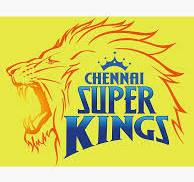
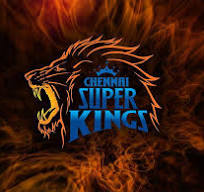
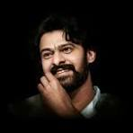
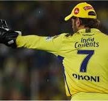

| headings(1000) | |||
| page1 | page2 | page3 | page4 |
|---|---|---|---|
| In 2008, Dhoni was awarded India's highest sport honor Major Dhyan Chand Khel Ratna Award by Government of India. He received the fourth highest civilian award Padma Shri in 2009 and third highest civilian award Padma Bhushan in 2018. Dhoni holds an honorary rank of Lieutenant Colonel in the Parachute Regiment of the Indian Territorial Army which was presented to him by the Indian Army in 2011. He is one of the most popular cricketers in the world. |  | Uppalapati Venkata Suryanarayana Prabhas Raju ([pɾabʱaːs] born 23 October 1979), known mononymously as Prabhas, is an Indian actor who works predominantly in Telugu cinema.[4] One of the highest-paid actors in Indian cinema,[5] Prabhas has been featured in Forbes India's Celebrity 100 list since 2015[6][7][8] and has received seven Filmfare Awards nominations, a Nandi Award, and a SIIMA Award. Prabhas is referred to in the media as the "Rebel Star" and "Darling".[9] | |
|  | Hanuman is a Hindu god whose shape is half-monkey, half-human. He is the most devoted follower of Prince Rama, so he features a lot in the Ramayana as well as lots of other traditional Hindu stories and artworks. Hanuman has special powers and qualities that he uses to help Rama rescue his wife Sita. |  | Uppalapati Venkata Suryanarayana Prabhas Raju ([pɾabʱaːs] born 23 October 1979), known mononymously as Prabhas, is an Indian actor who works predominantly in Telugu cinema.[4] One of the highest-paid actors in Indian cinema,[5] Prabhas has been featured in Forbes India's Celebrity 100 list since 2015[6][7][8] and has received seven Filmfare Awards nominations, a Nandi Award, and a SIIMA Award. Prabhas is referred to in the media as the "Rebel Star" and "Darling".[9] |
|  | Uppalapati Venkata Suryanarayana Prabhas Raju ([pɾabʱaːs] born 23 October 1979), known mononymously as Prabhas, is an Indian actor who works predominantly in Telugu cinema.[4] One of the highest-paid actors in Indian cinema,[5] Prabhas has been featured in Forbes India's Celebrity 100 list since 2015[6][7][8] and has received seven Filmfare Awards nominations, a Nandi Award, and a SIIMA Award. Prabhas is referred to in the media as the "Rebel Star" and "Darling".[9] | Durga is seen as a motherly figure and often depicted as a beautiful woman, riding a lion or tiger, with many arms each carrying a weapon and often defeating demons. She is widely worshipped by the followers of the goddess-centric sect, Shaktism, and has importance in other denominations like Shaivism and Vaishnavism. | |